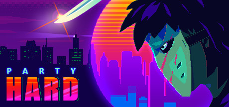

Gry Na Słaby PC

CS: 1.6
Gracz opowiada się po stronie grupy terrorystów lub oddziału antyterrorystycznego. Arsenał broni wzorowany jest na oryginalnym wyposażeniu oddziałów specjalnych z różnych państw. Do podstawowych broni należą pistolety, karabiny szturmowe, granaty czy materiały wybuchowe. Każda z drużyn ma dostęp do innego rodzaju wyposażenia i amunicji.
Party Hard

Wcielamy się w człowieka, który, poirytowany notorycznymi imprezami i zakłócaniem ciszy nocnej przez swoich sąsiadów, postanawia uporać się z problemem w dość drastyczny sposób. Zamiast kolejny raz wzywać policję, protagonista zamierza dostać się na imprezę i wymordować wszystkich jej uczestników.
Call of Duty

Gracze wcielają się w członków zorganizowanego gangu przestępców. Akcja osadzona jest w mieście Waszyngton, a fabuła koncentruje się na serii niebezpiecznych zleceń otrzymywanych za pomocą systemu CRIMENET. W misjach bierze udział maksymalnie czterech graczy.
FTL: Faster Than Light
Strategia osadzona w realiach sci-fi opowiadająca o samotnym statku próbującym uciec przed olbrzymią wojenną armadą. Trasę przelotu planujemy w trybie turowym, a walki rozgrywane są w czasie rzeczywistym. Ponadto musimy zarządzać załogą i ulepszać naszą jednostkę.
Need for Speed: Most Wanted

Need for Speed: Most Wanted stanowi kolejną część serii, rozwijanej od połowy lat dziewięćdziesiątych XX wieku. Po nocnych eskapadach z obu odsłon Need for Speed: Underground przyszedł czas na poruszanie się sportowym samochodem w warunkach zgoła odmiennych.e